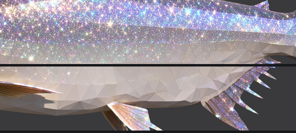
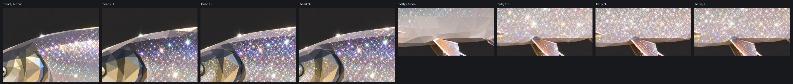
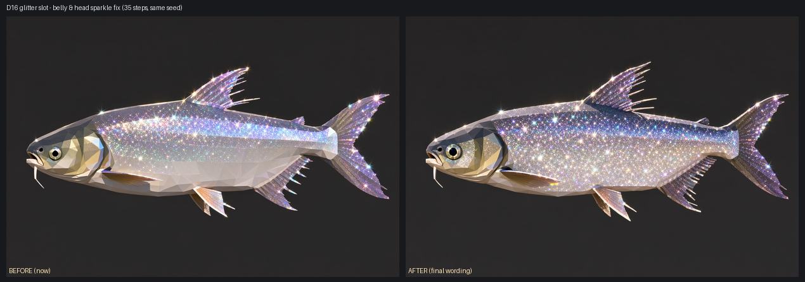
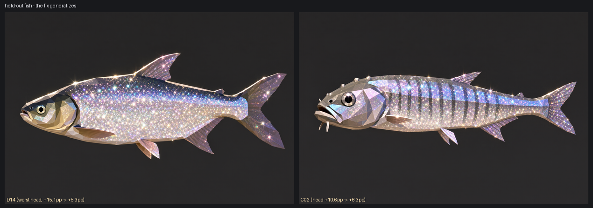

点任意处关闭（Esc 也可以）
tools/measure-shine.py（分区量「闪度」= L>150 且局部对比>12 的像素占比）。a clearly lighter belly 整体提亮、
头部被 rim light 照亮，两处都"亮而平" ⇒ 闪不起来。
改词后：腹 Δ 从 +14~+17pp 变成 −4.5~−9.0pp（反超背部），头 Δ 从 +10.6~+15.8pp 降到 +3.2~+6.3pp。

| 区域 | 现状（背 − 区域，正数 = 该区域更不闪） | 亮度 |
|---|---|---|
| 头部 | +10.6 ~ +15.8pp（最差 D16 +15.8、D04/D14 +15.1、D03 +15.1） | 多数比背亮 |
| 腹部 | +6.3 ~ +23.5pp（18/18 全中） | 常见比背更亮（又亮又平） |

| 候选 | 改了什么 | Δ头 | Δ腹 |
|---|---|---|---|
| A-now | 现状 | +13.3 | +15.4 |
| B-color | 颜色句里点名「闪要铺到腹部」 | +14.3 | +5.7 |
| C-shade | 明暗句改成「腹略亮但仍满身闪」 | +12.2 | +8.3 |
| D = B+C | 上面两条都改 | +9.6 | −2.7 |
| F = D + 尾句 ✅ | 再在 LIGHT 之后补一句
「头的肚子也要满布闪点、不许有暗哑平面」 | +3.2 | −5.3 |
LIGHT 后面：LIGHT 写的是「光只在背和尾 + 深阴面」，
而 MORPH_SCOPE 虽然写了 including the head and the fins，但它排在 LIGHT 之前，
压不住（后说者赢）。

| 鱼 | 现状 Δ头 / Δ腹 | 定稿 Δ头 / Δ腹 |
|---|---|---|
| D16（传说） | +15.8 / +17.5 | +3.2 / −5.3 |
| D14（最差头部） | +15.1 / +14.4 | +5.3 / −9.0 |
| C02 | +10.6 / +14.8 | +6.3 / −4.5 |
tools/check-prompt-drift.py 逐鱼逐档盯着（1810 个提示词，
改动后必须只有 shiny 变）。--skip-existing 只看文件在不在）——
--stale 会列出它们。
docs/images/card-ab/shine-*.png；面片措辞那一轮见
docs/闪光档措辞对比.html；口径记在 docs/画风与颜色标准.md §7.4.1。